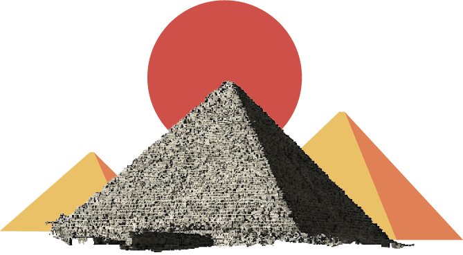
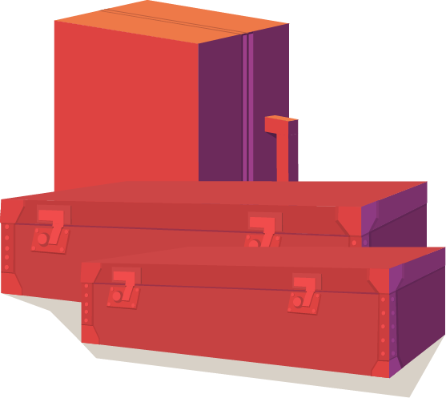
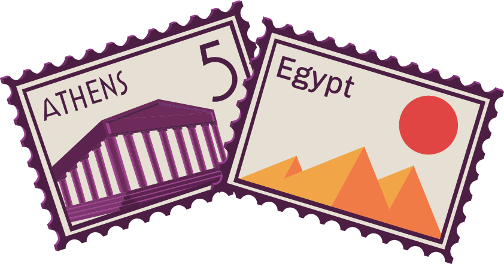
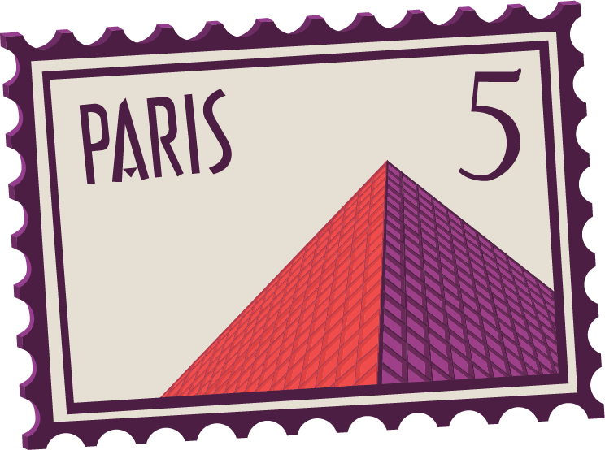
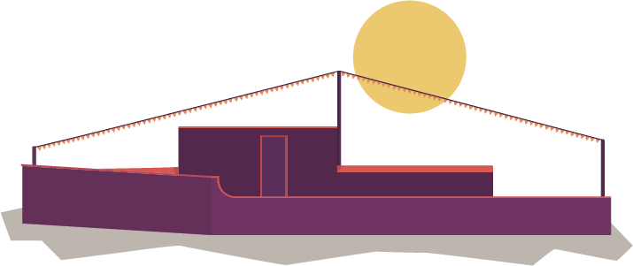
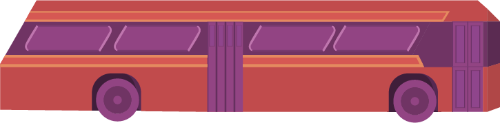

Journey To Caïro
I vividly recall the disbelief that nearly overwhelmed me. There we stood, on the enchanting platform of Gare de Lyon in Paris. At that time, I was a young Parisian governess, employed by a wealthy businessman who had to travel to Cairo for a while. And I was to accompany him! It was 9 o'clock in the evening, and within half an hour, the train would depart. From Paris all the way to Cairo in just 6 days! A mixture of fear and excitement engulfed me.
Since 1889, one could travel from Paris to Istanbul in just 3 nights twice a week. In 1906, the Simplon Tunnel opened, cutting through the Alps, allowing the train to smoothly journey from Switzerland to Italy. It seemed almost unimaginable at the time.

In the year 1930, we witnessed the heyday of the Simplon Orient-Express. Behind me, two gentlemen enthusiastically discussed the adventure that lay ahead. Although the train originated in Europe, the first sleeper trains were introduced in America. The ingenious Belgian engineer Georges Nagelmackers brought them to Europe, making them more luxurious than ever by founding the Compagnie Internationale des Wagons-Lits.
Found out which route
Orient Express took.
Choose a final destination on one of the buttons and discover the route the Orient Express did.
Embarking a journey
of discovery
The platform was bustling, making it all the more intriguing. Even with the most vivid imagination, one could not fathom the diverse group of people gathering! Diplomats and statesmen, stars and aristocrats, artists and writers, even Eastern traders and Indian Maharajas heading home.
Our luggage was carefully loaded into baggage cars, and an attendant led us to our compartments. Ready to depart! First stop: Dijon, then Lausanne, Milan, Venice, Trieste, Zagreb, Belgrade, and Sofia, finally arriving in Istanbul. There, we enjoyed an overnight stay at the Pera Palace Hotel, built by Georges Nagelmackers' Compagnie Internationale des Grands Hôtels.
Unparalleled luxury
As a governess, I had seen my share of luxury, but this was unparalleled.The attention to detail was trulyastonishing. I shared a compartment with the daughter, while mother and father had their own spaces. Two beds stacked, a personal sink, and walls adorned with exquisite marquetry. Crisp linens and woolen blankets adorned the beds, and we even had a button to summon the butler!
Dicover for each wagon what kind of luxury there is
The train consisted of 5 sleeping cars, a dining car, and two baggage cars. No lounge
Swipe To the left
Trough 7 countries
The journey from Paris to Istanbul took only three days because the train ran day and night. I had expected a tiring journey, but the ease and comfort astonished me. At the beginning of the journey, the train conductor collected all the necessary documents, sparing us from being awakened at night for border controls.
It was fascinating to see the landscape change. The farther we traveled, the more exotic the surroundings became. With the Simplon Orient-Express, you could also travel to Athens. In Belgrade, the two cars destined for that journey were uncoupled, immediately replaced by two others: one from Berlin and one via Vienna. This gave us the opportunity to enjoy the enchanting view in Belgrade.
A bridge between
east and west
Eventually, we reached the final destination of the Simplon Orient-Express: Sirkeci Station in Istanbul. A magical station built in 1890 by the German architect August Jachmund, specifically for the Orient Express. It was a splendid blend of Eastern and Western elements.
From Istanbull to Caïro
After our overnight stay at the Pera Palace Hotel, we continued our journey with the Taurus Express, also owned by the Compagnie Internationale des Wagons-Lits. This train had two destinations: Baghdad and Cairo. In Aleppo, the train was split for both destinations.
4 Trains

2 Ships
1 Bus
Not comfortable
but impressive
Admittedly, our journey from Istanbul to Cairo was somewhat less comfortable than from Paris to Istanbul. It took about the same time, but we were immersed in a strange, exotic culture, so I certainly had no reason to complain. First, we traveled with the Taurus Express to Tripoli in Lebanon. Then, we continued with Rolls Royce buses to Haifa in Palestine. Next was a train journey to Kantara at the Suez Canal, where we took a ferry. A final train took us to Cairo. From Paris to our final destination, we needed four trains, two ships, a bus, and six days. In modern times, this seems unthinkable, but back then, it was truly impressively swift!
First row experience
Each one of these people has ridden on the Orient Express and all had a wonder full time Click one of the buttons under the letters to explore their experiences